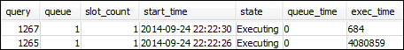
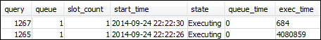

セクション 1: デフォルトキュー処理の動作の理解
手動 WLM の設定を開始する前に、Amazon Redshift におけるキュー処理のデフォルト動作を理解しておくと役に立ちます。このセクションでは、いくつかのシステムテーブルから情報を返すデータベースビューを 2 つ作成します。その後、いくつかのテストクエリを実行して、クエリがデフォルトでどのようにルーティングされるかを確認します。システムテーブルの詳細については、「システムテーブルとビューのリファレンス」を参照してください。
ステップ 1: WLM_QUEUE_STATE_VW ビューを作成する
このステップでは、WLM_QUEUE_STATE_VW というビューを作成します。このビューは、次のシステムテーブルから情報を返します。
チュートリアル全体でこのビューを使用して、WLM 設定の変更後にキューがどうなるかをモニタリングします。次の表は WLM_QUEUE_STATE_VW ビューが返すデータについて説明しています。
| 列 | 説明 |
|---|---|
| キュー | キューを表す行に関連付けられた番号。キュー番号によってデータベースでのキューの順序が決まります。 |
| description | 特定のユーザーグループでのみ使用できるか、特定のクエリグループでのみ使用できるか、またはあらゆるタイプのクエリで使用できるかを示す値。 |
| slots | キューに割り当てられたスロットの数。 |
| mem | キューに割り当てられているメモリの量 (スロットあたりの MB 単位)。 |
| max_execution_time | クエリの実行が許可されている時間。これを過ぎるとクエリは終了します。 |
| ユーザー_* | ユーザーグループに一致させるために、ワイルドカード文字の使用が WLM 設定で許可されるかどうかを示す値。 |
| query_* | クエリグループに一致させるために、ワイルドカード文字の使用が WLM 設定で許可されるかどうかを示す値。 |
| queued | キューで処理を待機中のクエリの数。 |
| executing | 現在実行中のクエリの数。 |
| executed | 実行されたクエリの数。 |
WLM_QUEUE_STATE_VW ビューを作成するには
-
Amazon Redshift RSQL を開き、TICKIT サンプルデータベースに接続します。このデータベースがない場合は、「前提条件」を参照してください。
-
次のクエリを実行して、WLM_QUEUE_STATE_VW ビューを作成します。
create view WLM_QUEUE_STATE_VW as select (config.service_class-5) as queue , trim (class.condition) as description , config.num_query_tasks as slots , config.query_working_mem as mem , config.max_execution_time as max_time , config.user_group_wild_card as "user_*" , config.query_group_wild_card as "query_*" , state.num_queued_queries queued , state.num_executing_queries executing , state.num_executed_queries executed from STV_WLM_CLASSIFICATION_CONFIG class, STV_WLM_SERVICE_CLASS_CONFIG config, STV_WLM_SERVICE_CLASS_STATE state where class.action_service_class = config.service_class and class.action_service_class = state.service_class and config.service_class > 4 order by config.service_class; -
次のクエリを実行して、ビューに含まれる情報を表示します。
select * from wlm_queue_state_vw;結果の例は次のとおりです。

ステップ 2: WLM_QUERY_STATE_VW ビューを作成する
このステップでは、WLM_QUERY_STATE_VW というビューを作成します。このビューは STV_WLM_QUERY_STATE システムテーブルから情報を返します。
チュートリアル全体でこのビューを使用して、実行中のクエリをモニタリングします。次の表は WLM_QUERY_STATE_VW ビューが返すデータについて説明しています。
| 列 | 説明 |
|---|---|
| query | クエリ ID。 |
| キュー | キューの数。 |
| slot_count | クエリに割り当てられたスロットの数。 |
| start_time | クエリが開始された時刻。 |
| state | 実行などのクエリの状態。 |
| queue_time | クエリがキューに入ってからの時間 (マイクロ秒)。 |
| exec_time | クエリが実行されている時間 (マイクロ秒)。 |
WLM_QUERY_STATE_VW ビューを作成するには
-
RSQL で次のクエリを実行して、WLM_QUERY_STATE_VW ビューを作成します。
create view WLM_QUERY_STATE_VW as select query, (service_class-5) as queue, slot_count, trim(wlm_start_time) as start_time, trim(state) as state, trim(queue_time) as queue_time, trim(exec_time) as exec_time from stv_wlm_query_state; -
次のクエリを実行して、ビューに含まれる情報を表示します。
select * from wlm_query_state_vw;結果の例は次のとおりです。

ステップ 3: テストクエリを実行する
このステップでは、RSQL で複数の接続からクエリを実行し、システムテーブルを確認して、クエリがどのようにルーティングされて処理されたかを判断します。
このステップでは、RSQL ウィンドウを 2 つ開いておく必要があります。
-
RSQL ウィンドウ 1 では、このチュートリアルで既に作成したビューを使用して、キューとクエリの状態をモニタリングするクエリを実行します。
-
RSQL ウィンドウ 2 では、RSQL ウィンドウ 1 に表示される結果を変更する実行時間が長いクエリを実行します。
テストクエリを実行するには
-
RSQL ウィンドウを 2 つ開きます。既にウィンドウを 1 つ開いている場合は、2 つ目のウィンドウを開くだけでかまいません。どちらの接続にも同じユーザーアカウントを使用できます。
-
RSQL ウィンドウ 1 で、次のクエリを実行します。
select * from wlm_query_state_vw;結果の例は次のとおりです。

このクエリは自己参照的な結果を返します。現在実行中のクエリはこのビューからの SELECT ステートメントです。このビューに対するクエリは少なくとも 1 つの結果を常に返します。次のステップで実行時間が長いクエリを開始した後に表示される結果とこの結果を比較します。
-
RSQL ウィンドウ 2 で、TICKIT サンプルデータベースからクエリを実行します。このクエリは約 1 分間実行されるため、その間に WLM_QUEUE_STATE_VW ビューと以前に作成した WLM_QUERY_STATE_VW ビューの結果を確認できます。場合によっては、クエリの実行時間が短くて両方のビューに対してクエリを実行できないことがあります。このような場合は、
l.listidでフィルターの値を増やし、実行時間を延長できます。注記
クエリの実行時間を短縮し、システムパフォーマンスを向上させるために、Amazon Redshift は特定の種類のクエリの結果をリーダーノード上のメモリにキャッシュします。結果のキャッシュが有効になると、その後のクエリはより高速に実行されます。クエリが高速で実行されることを防ぐには、現行のセッションで結果のキャッシュを無効にします。
現在のセッションに対する結果のキャッシュをオフにするには、以下にあるとおり、enable_result_cache_for_session パラメータを
offに設定します。set enable_result_cache_for_session to off;RSQL ウィンドウ 2 で、次のクエリを実行します。
select avg(l.priceperticket*s.qtysold) from listing l, sales s where l.listid < 100000; -
RSQL ウィンドウ 1 で、WLM_QUEUE_STATE_VW と WLM_QUERY_STATE_VW をクエリし、その結果を以前の結果と比較します。
select * from wlm_queue_state_vw; select * from wlm_query_state_vw;結果の例は次のとおりです。
 

以前のクエリとこのステップでの結果との間には次の違いがあることに注意してください。
-
現在は WLM_QUERY_STATE_VW に 2 行あります。1 つの結果は、このビューに対して SELECT 操作を実行する自己参照的クエリです。2 つ目の結果は、以前のステップの長時間実行されるクエリです。
-
WLM_QUEUE_STATE_VW の executing 列の値は、1 から 2 に増えました。この列エントリは、キューで 2 つのクエリが実行中であることを意味します。
-
executed 列の値は、キューのクエリを実行するたびに増加します。
WLM_QUEUE_STATE_VW ビューは、キューの全体像と各キューで処理中のクエリの数を把握するのに便利です。WLM_QUERY_STATE_VW ビューは、現在実行中の個々のクエリについてその詳細を把握するのに便利です。